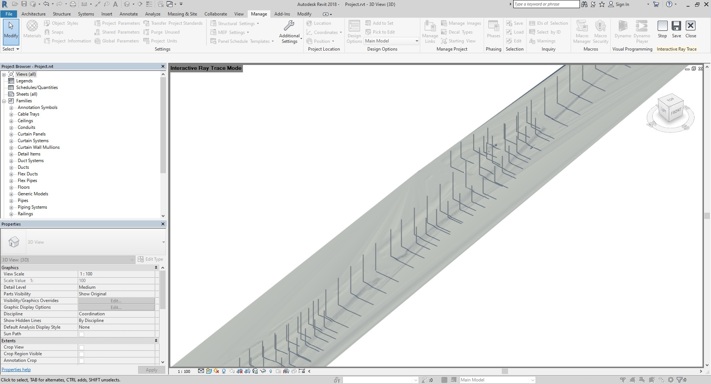
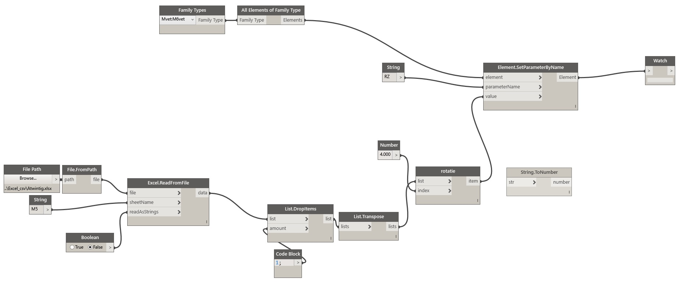
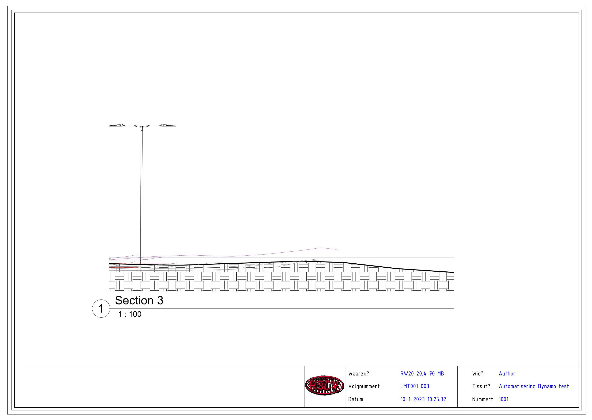

Dinsdag 6 december 2022
Revit Dynamo Blog.
In een oud probleem gedoken. Hoe knutselen in Revit? In AutoCAD en QGIS kom ik een heel eind met het in en uitvoeren van locatiecodes en gedoe met blokken. Binnen Revit moet ik dat nog allemaal nog gaan uitpluizen. Toen bij mijn tijd bij BAAK heb ik wat dingen gedaan met Revit. Wat standaard knutselwerk. De verkeersborden en iets van een voedingskast, daar hield het jammer genoeg mee op. Wilde diep in Revit duiken, maar als je er eigenlijk niets hebt te zoeken kan ik me daar niet voor motiveren blijkbaar. Binnen Revit heb je (blijkbaar al sinds 2013) Dynamo, iets van een omgeving om wat dingen te automatiseren. Wilde alle elementen-data uit AutoCAD extraheren in één tijd op zijn plek werpen in het Revit 3druimte. Had nog wat oude troep liggen en daar ging het eigenlijk niet meteen erg goed mee. Locatie informatie uit AutoCAD, vermenigvuldigen met duizend en dan de projectpositie eraf trekken.
Dynamo was wennen, en ik was vergeten dat er in Revit een verlegd projectpunt was. Na het aan elkaar knoppen van een berg nodes, gebeurde er maar niets in de buurt waar ik aan het loeren was, na het draaien van de code. Achteraf dus omdat de punten buiten het bereik van het project vandaan waren gelegen. Alle x en y waarden wat naar beneden geschroefd en nu hebben we tenminste in het Dynamo-scherm zicht op de punten. Deze z-waarden haalde ik uit QGIS. Spot elevation met het AHN.
Nog eens kijken naar families en masttypen, maar ben tevreden met de voortgang. Volgens mij kunnen we alles erin plakken straks. Kasten, portalen en lichtmasten, de hele santemekraam.
woensdag 14 december 2022
Het plaatsen van de lichtmasten heb ik nu enigszins onder controle. Omdat de lichtmasten in vergelijking met de keigrote lege ruimte in Revit maar dun en klein zijn, had ik niet door dat de routine gewoon werkte. Tijdens het wisselen en overschrijven van projecten, het aanpassen van het project basepunt viel me dat ineens op. Weer een hele dag verkloot. Het is een goeie gewoonte je AutoCAD bestanden zoveel mogelijk te optimaliseren voor de extractie. En het verschil tussen units in de peiling te houden. Project basepunt en survey basepunt in Revit, zijn weer iets anders dan de waarden die je uit World UCS AutoCAD haalt.
Zelfde project basepunt als dat we bij de Blankenburgverbinding gebruikt. WCS in AutoCAD is project basepunt in Revit. De masten heb ik na de sof van gisteren wat meer body gegeven, zodat ze makkelijker te zien zijn. Als de coördinaten te ver van het projectpunt zijn verwijderd, gaat de hele zaak niet door en krijg je een foutmelding in Dynamo. Wat is er nou dan weer niet goed? Tranen in mijn ogen. Nu nog even een routine vinden om de masten te draaien. Lijkt niet belangrijk maar er zit een luik in de schacht waar de kabels in en uit lopen (onder de grond). Die houden ze denk ik evenwijdig met de kant asfalt dus de kabelloop. Daarna doe ik de uithouders plaatsen en draaien. Nog even kijken of ik alle family-instances nog ga nummeren, dan kan ik selecteren bij naam, en de parameter voor rotatie invoeren. Hopelijk kan dat ook met een Excel bestand. De family van de uithouders heb ik op die manier ingericht. Dat is al bijzonder en komt niet veel voor in Revit. Zal nog wel tegen een en ander aanlopen voor het me lukt, gelukkig werkt dat gepuzzel verslavend en blijf ik door zoeken.
Donderdag 15 december 2022. Hieronder Holysingel A20 met een paar knoeperts.
Vanmorgen vroeg begonnen. De avond ervoor was ik na het zien van een paar YT video’s overtuigd dat het allemaal wel mee zou vallen met de rest (het regelen van de rotatie van de masten). Ook nog een paar families aangemaakt voor de uithouder (het gedeelte waar uiteindelijk het armatuur aan komt te hangen). Dat viel nog even vies tegen en ik kreeg in Dynamo steeds foutmeldingen over het type data waarin de parameter in was opgeslagen. Dan ben je aan het uitsluiten wat er fout gaat, maar je hebt inmiddels zoveel nodes in de workspace dat er geen beginnen meer aan is. Gelukkig kan je op elke node in de pijpleiding een listener zetten. Revit zit van binnen helemaal vol met lijsten. Wat dat betreft is mijn ervaring met QGIS toch geen weggegooid geld geweest. Ook in die wereld draait alles daarom.

Conclusie 15 december 2022: Het was lastig om er weer even helemaal in te komen, dat Revit. Maar na een paar dagen begon het me weer te dagen. Wel moest ik allerlei zaken weer met nieuwe ogen bekijken. In de tussentijd toch wat wijzer geworden met allerlei soorten code. De families moeten op een andere manier worden opgebouwd, als mijn methode werken gaat. Normaal gesproken zit er geen draaihoek in Revit families. Die had ik nog liggen van mijn ramen en deuren-periode. Verder zou er in 2D AutoCAD een en ander moeten worden veranderd. In ieder geval iets dat de NLCS symbolen voor lichtmasten en kasten dusdanig worden aangepast, dat de draaihoek in het dynamo script kan worden gebruikt. In ieder geval CW of CCW gelijk schakelen van de hoek. Eigenlijk kan er nog veel meer geautomatiseerd worden. Ga in ieder geval nog een prefab vlak maken dat perpendiculair aan de as van de weg kan meelopen. Om dwarsdoorsnedes te maken. Verder een nieuwe computer. Data-worstelen kost keiveel RAM. Over een dag testen drie keer de machine opnieuw op moeten starten. Zit onder andere in Microsoft Office Excel dat ten alle tijde een goed verhaal in het voorbeeldvenster van explorer wil laten zien. Misschien dat uitzetten. Kan ook.
Zondag 18 december 2022
Na heel, heul veel architecten-YouTube kijken kwam ik iets tegen waar ik mee verder kon. Gelijk weer terug naar AutoCAD tekening waaruit ik de blokken extraheer. Nodig, een naam (die ik later bij de sectionview gebruiken kan (en in de onderhoek)). Net als bij de draaihoek, de family aanpassen en updaten. En de informatie in de families gieten. Gebruik Revit nu als QGIS. Met een bepaalde node kan je een vlak langs een lijn lopen laten. Een andere ingewikkeld genaamde node regelt het zo, dat je met die parameter een sectionview maakt. Dus ik loop per wegvak het tracé langs, met een vlak loodrecht op de hartlijn van de weg. Elke keer als ik bij een element stoppen doe, noteer ik de parameter. (kan automatisch weet ik bijna zeker). Die parameter loopt van 0 aan het begin van de lijn, tot 1 aan het eind. Dan krijg je dus weer een lijstje (jaja), dat je af kan raffelen met een Excel bestand of iets dergelijks. Die plaatst automatisch alle secties, geen gezicht. Nu nog iets verzinnen om ze te hernoemen naar de BSP code of zoiets. Hernoemen bleek niet nodig. Dat moet ook automatisch kunnen, net als dat weer doorsluizen naar de onderhoek. Als er een volume in de family wordt gestopt, kan je dat wellicht ook nog automatiseren. Hier zijn de dwarsdoorsnedes automatisch geplaatst. Zeker voor de lichtmasten kan je steeds dezelfde hoogte en breedte gebruiken voor de view. Per alignement kan je steeds alle elementen die je tegenkomt op de middenberm op de foto knippen. Ook nog gelukt om de dwarsdoorsnedes op de layout geplaatst te krijgen. Ik heb gezien op YouTube dat je tegenwoordig de plaats van de doorsnede kan regelen. Heb de eerste paar layouts bekeken, maar voor ik de hele serie ga afwerken heb ik geen zin meer. Had nu de oude lichtmasten gebruikt (normaal formaat). Omdat ik de hartlijn van de weg op een andere manier had gemaakt, was de lengte anders en moest ik de lijst met parameters overnieuw maken. Heb eigenlijk nog geen lijn getrokken. Alles via Excel lijsten naar binnen gestampt.

Maandag 19 december 2022
Later heb ik een script gezien voor het aanmaken van layouts en een gedeelte van de onderhoek invullen vanaf Excel. Beetje aangepast aan onze vreemde manier van werken. Toen een arbeidsgang om alle doorsnedes op een layout te plakken. Zit alleen met de schaal van die doorsnede, wil ik eigenlijk in kunnen stellen (hier pakte het toevallig aardig uit (default blijkbaar 1 : 100)). Je kan wel aparte packages installeren in Dynamo, waar je de plaats van de viewport op de layout kan controleren, maar die werken niet in Revit 2018. Heb het later met een hack opgelost (de layout onder de viewport verschoven).

Conclusie 15-12-2022: Dynamo? Ge-wel-dig!
Zondag 25 december 2022
Vanmorgen werd ik wakker, en wist ineens hoe ik de aangepaste families moest indelen. Heb afgelopen week geprobeerd om een manier te vinden, de onderdelen in één family onder te brengen en hem dan te draaien. Viel nog niet mee. Dacht dat Russische-poppetjes-gewijs wel even te gaan doen, viel tegen. Zou kunnen wat ik wil, alleen zijn niet alle families punt gebaseerd. Sommige hebben een vlak nodig om tegenaan te plaatsen. Al met al heb ik het zwaar overdacht allemaal. Per type lichtmast helemaal opbouwen plakken en knippen uit alle families die je wil (masten, uithouders en armaturen), dan een naam geven en de parameter voor rotatie toevoegen. Ook nog geworsteld met wat ik dacht dat de lengte parameter van een lijn was. Die van 0 naar 1 loopt, je weet toch? Die blijkt in een bocht veel harder te lopen dan op een recht stuk. Gelukkig was er ook een node voor de koordlengte in een lijn. Opgelost dus, en in AutoCAD kan je dat van tevoren mooi doen met de hartlijn van de weg. Dan kan je die opdelen in lijnstukken, de lengte nemen en de hele lijn weer opbouwen qua lengte. Al die lijnstukken, daar maak je ook weer een lijstje van en zoef naar binnen janken (gebruik je voor de dwarsdoorsnedes (die komen nu heel nauwkeurig terecht)).

Lang voor in de middenberm (10.0 m.), die andere voor bij de op en afritten en verkeerspleinen (6.0 m.). Om eerst eens alles op ware grootte te bezien, moest ik weer leren hoe die families ook weer in elkaar steken. Daarmee aan de slag gaan in bestaande projecten is een regtelrechte ramp. Dus had ik allemaal zelf dingen gefiguurzaagd. Later begreep ik pas dat dat helemaal niet nodig was, maar ik had een family voor de uithouders die ik gesloopt had. Gedurende het leerproces zag ik wat de parameter voor de zichtbaarheid voor een onherstelbare schade kan aanbrengen. Tenminste als je zoals ik alles opent en over elkaar overschrijft. Versies door elkaar gebruikt. En in het algemeen iets slordig aangelegd bent. Maar daar is deze werkwijze ook ideaal voor. Je gooit erin wat er in de totalen onderverdeeld in onderdelen uitkomt en vice versa. Zo blijf je jezelf controleren. Ten slotte heb ik de genre families overnieuw geladen in de samengestelde lichtmast. Nodig om de aparte onderdelen in het project te zien. Anders kijkt Revit daar overheen. Ongelofelijk het werkt ook nog!
En toen ging ik draaien, het plaatsen ging voortreffelijk. Tijdens het draaien vlogen de lantaarnpalen je om de oren. Door een combinatie van constraints in de schetsen, werd het model instabiel zodra je er een draai aan gaf. Asymmetrische gevormde masten gierden uit de bocht. Dus daar moest ik een en ander aanpassen. Gewoon symmetrisch maken en de onderdelen die je extra plaatsen moet verbergen in de family. Wel op een dergelijke manier ingesteld dat de onderdelen niet worden meegeteld bij het samenstellen van de stuklijst.
Donderdag 29 december 2022
Vandaag zou ik alles een beetje afraffelen en een eindconclusie trekken of iets dergelijks. Nieuw project met verse families van de grond af opbouwen. Na een paar routines het stuk snelweg stond alweer helemaal vol, bleef ik toch weer ergens hangen waar ik me aan ergerde. Sommige dwarsdoorsneden moet je strekken en rekken om de lichtmast et kunnen zien. De lijn waarmee de sneden worden getrokken ligt op level 0 maaiveld. Kan het viewport zo groot mogelijk maken in een A4, maar soms moet je scrollen in de viewport en dat moet niet hoeven. Dus weer terug naar de tekentafel. De waarden zijn er allemaal wel maar staan soms op een ander excel document, dus moet je een beetje plakken en knippen om de combinatie te vinden. Weer een lijst met maximum en minimumwaarden voor de y component van de viewport. En weer gaat dat gewoon goed komen. Niet zeuren gewoon even regelen en daarna wel weer door. Wordt vanzelf handig in het combineren van die lijsten. Na wat verschuiven met de template kwam ik aardig in de buurt met de nieuwe sheet.

Vrijdag 31 december 2022
Toch lastig al die bestanden uit elkaar houden. Moet daar flink in gaan verbeteren want ik haal af en toe alles door elkaar. Net als bij QGIS heb ik binnen de kortste keren allerlei bestanden open staan en overschreven. Gebeurt nou eenmaal of je moet na elke arbeidsgang even je bestanden opslaan en sluiten. Geen tijd voor en maar door kachelen. Huilon. Ik had de doorsnedes aardig onder controle. Behalve het niveau in y-richting wilde ik ook zijwaarts de breedte met een paar coördinaten aangeven zodat je af en toe en grotere of kleinere uitsnede maken kan. Al naar gelang wat je wilt laten zien en waar. In één richting ging dat goed maar toen ik de zaak omdraaien ging raakte ik geheel en al de weg kwijt. Morgen nog een poging wagen om de richting van de lijn om te draaien. Dan zou het makkelijker gaan (amateur).
Zaterdag 31 december 2022
Een laatste maal de autocadbestanden aangepast (hopelijk) een elementnummer en een typenummer toegevoegd aan het block dus de extractie. Om de volgorde van de verschillende types vast et leggen dacht ik. Maar toen ik nu vol vertrouwen alles in de ruimte had geplakt ging het mis met het aanpassen. Dan raakt Revit de tel en de volgorde kwijt (of ik doe iets niet helemaal juist (kan natuurlijk ook)). Lichtmasten en kasten staan volledig de verkeerde kant op te wijzen. Niet begrepen wat er aan schort, maar ik wil door. In ieder geval ben ik terug naar per type lichtmast de parameters invullen waaronder de draaihoek. Als ik dan een alignement ga opbouwen heb ik alle elementen nodig die ik tegenkom als ik van lage naar hoge kilometrage de snelweg lijn bewandel.
In AutoCAD heb ik de stations vastgesteld waar de machine halt houdt en een dwarsdoorsnede maakt. Dan is het makkelijk om op de volgorde te rangschikken (en in Dynamo een lijstje te maken), dan komen je dwarsdoorsnedes op het juiste tekeningenvel. Die lelijke snotterbel is een instelling van view title maar ik heb de kracht niet meer. De naam van de dwarsdoorsnede en het nummer doen we ook doorlinken zodat er geen fouten kunnen worden gemaakt. Nu wil ik eigenlijk nog een stuklijst op elke tekening. Maar wellicht is dat te veel gevraagd. Ben toe aan een berg bier. En ik weet dat met meer recente versies van Revit veel meer te knutselen valt in Dynamo. Voor de goede orde ik heb alleen de blokken in AutoCAD iets aangepast (uitgebreid met een paar volgorde attributen voor element en (lichtmast of kast-type). Heb in Revit een lijn getekend de hartlijn van de weg (na 2020 zou dat niet meer hoeven omdat vanaf dat jaar Civil 3D ook is uitgerust met Dynamo). Was bezig om een schedule op de layout te laten plotten door Dynamo. Geen zin meer om weer wat uit te zoeken. Ga met standalone Dynamo verder dingetjes met python uitproberen. Het is nog niet klaar..
